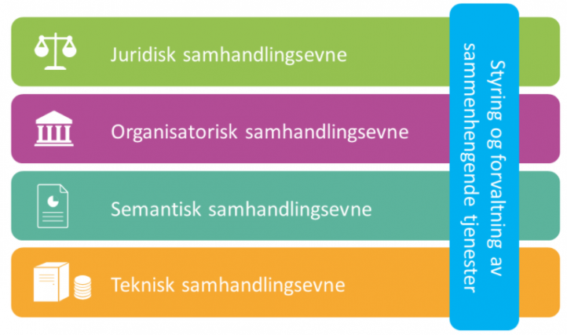
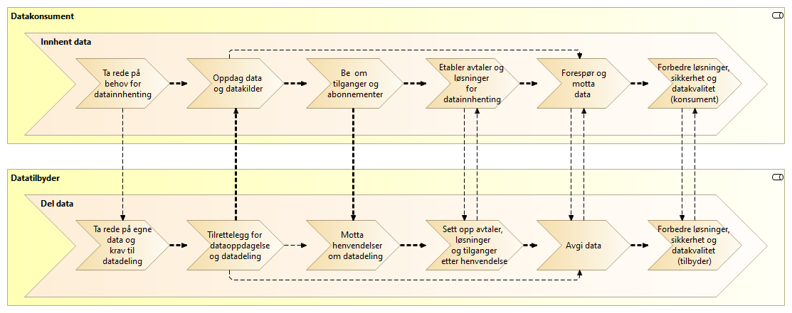
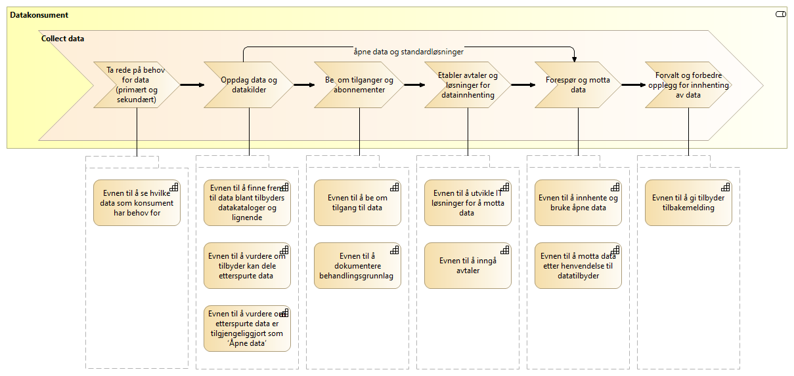
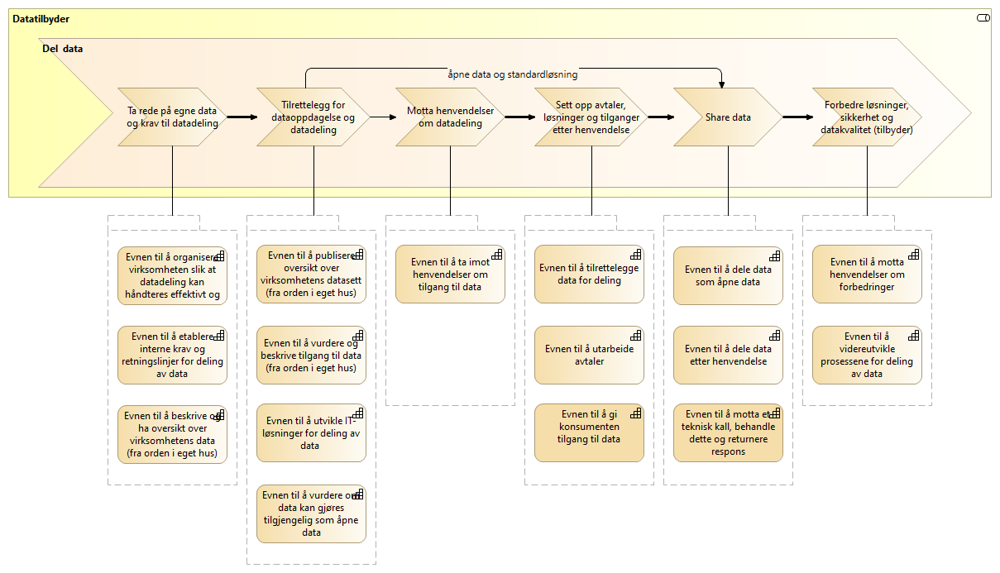
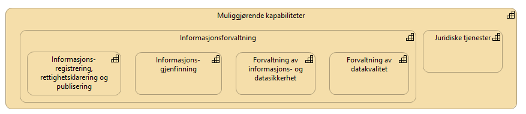
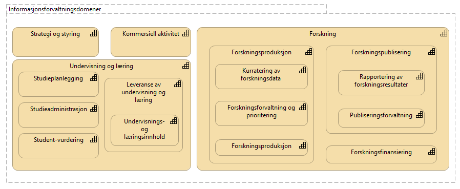
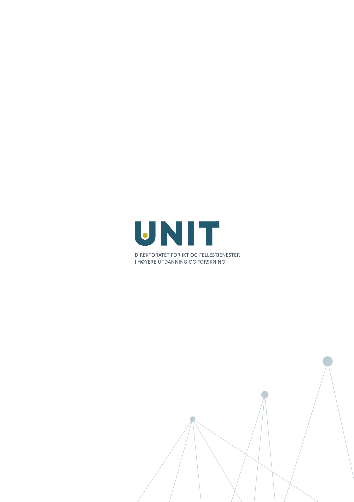

Referansearkitektur for deling av data i høyere utdanning og forsking Table of Contents 1. Bakgrunn 1.1. Forankring 1.2. Målgruppe 1.3. Bruksområder for datadeling 1.4. Økosystemer, tjenestekjeder og tverrgående prosesser 2. Målarkitekturen for datadeling i høyere utdanning og forskning 2.1. Om arkitekturprinsippenes føringer for datadeling 2.2. Hva er datadeling 2.3. Modeller for datadeling 2.4. Kapabiliteter 2.5. Felleskomponenter 2.6. Datautveksling 2.6.1. Datautveksling ved oppslag 2.6.2. Datautveksling ved publisering – konsumering (hendelsesbasert) 2.7. Integrasjonsmønster for datadeling 3. Forvaltning av målarkitekturen 3.1. Utvikling av brukernære API og datasett 3.1.1. Forutsetninger for arbeid med definisjon av datasett og API: 3.1.2. Rutinen for nye brukernære behov: 3.2. Roller og ansvar for informasjonsforvaltning 4. Vedlegg 1 Definisjoner 5. Vedlegg 2 Behov for avklaringer og utfordringer i sektorens kontekst 5.1. Issues mot nasjonale felleskompontenter (Maskinporten, ID Porten og Altinn autorisasjon) 5.2. Issues internt i UHF sektor Undertekst 1. Bakgrunn Økt deling av data er en forutsetning for å realisere flere av handlingsplanens initiativer innenfor utdanning, forskning, administrasjon og IMD. Dette dokumentet beskriver de føringene til organisasjoner og IT-løsninger som vi ønsker å bruke videre i sektoren til å skape en effektiv plattform for datadeling. Referansearkitekturen tar utgangspunkt i følgende pågående arbeid i sektoren i dag: Integrasjonsarkitektur UH:IntArk Arbeid med Sak og Arkiv i sektoren Arbeid med nytt API for Felles Studentsystem, FS Arbeid med masterdatakilder for forskning Referansearkitekturen innarbeider også føringer fra: Digitaliseringsstrategiene til offentlig sektor og høyere utdanning og forskning Overordnede arkitekturprinsipper for digitaliering av offentlig sektor Rammeverk for digital samhandling Nasjonal referansearkitekturene for datadeling og datautveksling Kapabilitetsmodell i høyere utdanning i EUNIS (European University Information System Organization) Behovene avdekket i tjenestedesign analyse av behovene til Studenter, Lærere, Forskere og tjenesteleverandører av Muliggjørende økosystem Referansearkitekturer gir mønstre og veiledning til utforming av løsninger. Denne referansearkitekturen beskriver både eksisterende samhandling formulert som beste praksis og nødvendig neste steg i generelle datadelingsmønster som kan gjenbrukes i sektoren. Disse mønstrene er dokumentert gjennom videreutvikling av referansearkitekturene fra digitaliseringsdirektoratet. Hensikten med arbeidet er å fremme en koordinert utvikling av datadeling som resulterer i økt gjenbruk av data «kun en gang» og nye, innovative anvendelser av data i sektoren. Noe om prosesser, rutiner og veiledninger. Noe om forvaltning av rammeverket 1.1. Forankring Referansearkitekturen er utarbeidet i et samarbeidsprosjekt Datadeling med prosjektdeltagelse fra Unit, NTNU, UiO og Uninett. Styringsgruppen består av medlemmer fra Unit, UiB, OsloMet, USIT, NMBU og Uninett. Noe om forankring av referansearkitekturen 1.2. Målgruppe Målgruppen for referansearkitekturen er primært arkitekter og tekniske prosjektledere. 1.3. Bruksområder for datadeling Datadeling skal støtte virksomhetene innen høyere utdanning og forskning i sine oppgaver. Arbeid med referansearkitekturen tar derfor utgangspunkt i følgende bruksområder som første steg i en brukerfokusert tilnærming: Innovativ, individuelt tilpasset læring Livslang læring Åpen forskning Heidi: Skulle vi si noe om forskning som ikke er åpen Effektivisert administrasjon Automatisert administrativ støtte Forskningssøknader Data Management Planning innen forskning og andre prosjekter Arkivering HR prosesser for onboarding og «terminering?» Innen bruksområdene over ser vi sektoren produserer og ønsker å tilby følgende hovedkategori av data for deling: Utdannings- og forskningsressurser til gjenbruk og viderebruk Forskningsresultater Forskningsdata Digitale læringsressurser Administrative data Grunndata for driftsformål Data brukt og produsert i saksbehandling Rapporteringsdata om egen saksbehandling og produksjon Analysedata om utdanning og forskning Sektoren har også bruk for data fra andre. Vi ser behov for følgende kategori av data: Grunndata i nasjonale felleskomponenter (f. eks. folkeregisteret og enhetsregisteret) Autentiseringsdata fra utlandet Informasjon om grunnutdanning eller utdanning i utlandet Informasjon om forskning i utlandet og forskningsresultater fra utlandet Informasjon om forskning i privatnæringsliv og resultater fra forskning i privat næringsliv Informasjon om forskningsfinansiering i Norge (fra Forskningsrådet, m. fl.) Bruksområdene over er utgangspunktet for forståelse av behovene som referansearkitekturen skal dekke. 1.4. Økosystemer, tjenestekjeder og tverrgående prosesser input fra tjenestedesignprosess rundt muliggjørende økosystem 2. Målarkitekturen for datadeling i høyere utdanning og forskning 2.1. Om arkitekturprinsippenes føringer for datadeling Pek til overordnede arkitekturprinsippene fra digitaliseringsdirektoratet og hva de betyr her. Trenger vi noen justeringer av prinsippene? Si noe om UH-IntArk prinsippene og forhold til de overordnede arkitekturprinsippene 2.2. Hva er datadeling Følgende definisjon for datadeling er hentet fra Digitaliseringsdirektoratets segmentarkitektur for datadeling. Datadeling Datadeling handler om å forsyne forretningsprosesser og dataanalyse med nødvendig datagrunnlag. De fleste aktører sitter på begge sider i dette bildet, og må kunne både dele og innhente data og hendelser. I beskrivelsene skilles det likevel gjerne på rollene som tilbyder og konsument. Begrepet datadeling er ut fra dette å oppfatte som kortform for deling og innhenting av data og hendelser. 2.3. Modeller for datadeling Når datatilbydere og datakonsumenter deler data, skjer det som en del av en digital samhandling. For at samhandlingen skal være vellykket, må tilbydere og konsumenter sikre at de handler i henhold til loven (juridisk samhandlingsevne), at aktørene har avklart forventninger til hverandre (organisatorisk samhandlingsevne), at datatilbyder og konsumenter har samme forståelse av dataenes betydning (semantisk samhandlingsevne) og at de tekniske løsningene som utfører datadeling fungerer sammen slik de skal (teknisk samhandlingsevne). Rammeverk for digital samhandling vist under utdyper disse samhandlingsevner.  Modellene i referansearkitekturen beskrevet under er laget for å ivareta juridisk-, organisatorisk-, semantisk- og teknisk samhandlingsevner og hjelper dermed de som benytter modellene til å lykkes med digital samhandling. Nasjonale referansearkitekturer innen datadeling og datautveksling er fremdeles under utvikling. Vi gjenbruker her noen av modellene uendret, og tilpasser noen for høyere utdanning og forskning. Den overordnede verdistrømmen for datadeling og relaterte kapabiliteter avbildet under er uendret.  Legge til tekst fra modellen som beskriver figuren 2.4. Kapabiliteter  Legge til tekst fra modellen som beskriver figuren  [Legge til tekst fra modellen som beskriver figuren] Som vist i figuren over, må datatilbyderen ha oversikt over egne data som skal deles og evne til å publisere datasettene slik at andre kan benytte disse. For at datadeling skal fungere etter hensikt, må dataene ha god kvalitet. Dette krever kapabiliteter innen informasjonsforvaltning. Vi har modellert disse evner som «muliggjørende kapabiliteter» i referansearkitekturen for høyere utdanning og forskning med utgangspunkt i EUNIS sin kapabilitetsmodell for europeiske universiteter som vist under. God informasjonsforvaltning støtter både opp om organisatorisk samhandlingsevne gjennom å gi organisasjoner riktig data av god kvalitet og støtter opp om semantisk samhandlingsevne ved å klargjøre dataenes betydning. Vi velger også å synliggjøre juridiske tjenester som muliggjørende kapabilitet for å støtte opp under juridisk samhandlingsevne.  Informasjonen som skal forvaltes finnes i en faglig kontekst som vi kaller «domener». Fageksperter bør ha eierskap til begrepsdefinisjoner innen egen domene. Domenene bør også være ansvarlig for forvaltning av egen informasjon. Vi har benyttet EUNIS kapabilitetsmodellen som kilde til definisjon av fagdomener der ansvar for forvaltning av informasjon skal være.  Legge til tekst fra modellen som beskriver figuren 2.5. Felleskomponenter (i sektoren hittil har «felles» betyd både at alle bruker samme instans, eller at alle har identiske instanser – vi må presisere hva som er hva etter hvert) Innledende tekst om hva slags funksjonalitet vi trenger i felleskomponenter og hvorfor, motivert fra kapabilitetene over. Jeg har laget et Archimate view som heter «Felleskomponenter», men jeg vil ikke ha bildet, bare teksten som står i beskrivelse av kompontenene Autentiseringstjeneste API manager API katalog / datakatalog API gateway Autorisasjonstjeneste / Nøkkelutsteder Klient register Identity Governance Administration (IGA) Heidi NB: mangler komponenter for hendelsesstrømming/-publisering 2.6. Datautveksling Med utgangspunkt i Referansearkitektur for datautveksling beskriv de mønstrene som vi bruker 2.6.1. Datautveksling ved oppslag 2.6.2. Datautveksling ved publisering – konsumering (hendelsesbasert) 2.7. Integrasjonsmønster for datadeling *Provisjonering *(hoved IntArk mønster): Holde «server-side» kopi løpende oppdatert fra master ved å benytte eOppslag til å hente data fra master og eNotifikasjon for å gi beskjed til abonnenter om at noe er oppdatert på master. Synkront oppslag: realisering av eOppslag – hva bør vi si om dette? Skal vi Skissere REST og GraphQL eller blir det for teknologispesifikk? “Event stream” på logisk nivå: Dette er en form for ePublisering/eNotfikasjon. Ref. Gartner sin FS evaluering, men siden de ikke har åpen dokumentasjon se for eksempel denne: https://mapr.com/blog/event-driven-microservices-patterns/https://mapr.com/blog/event-driven-microservices-patterns/]. Overordnet, omtales arkitekturen som “https://en.wikipedia.org/wiki/Event-driven_architecture[Event Driven Architecture]”.2 Tilnærmingen forutsetter tilnærming til konsistens omtalt som «https://en.wikipedia.org/wiki/Eventual_consistency[Eventual Consistency]». «Conflict resolution» kan her gjennomføres på flere måter avhengig av domenebehov. Mange benytter «last writer wins», men det finnes flere, strengere alternativer, som for eksempel https://debezium.io/blog/2020/02/10/event-sourcing-vs-cdc/Event sourcing og Change Data Capture]. Backend for frontend: relevant når vi skal spesifisere samhandling med individer, som i innovativ læring og livslang læring. eHelse sier «Backend-for-Frontend (BFF) er et utbredt designkonsept som benyttes for mange klienter og API-er. Konseptet går ut på å la ulike brukergrensesnittyper (Nettleserbaserte, App-er på mobil osv) ha hver sin backend slik at spesialtilpasninger på API-er som kreves for de ulike brukergrensesnitttypene kan realiseres uten at det går utover vedlikeholdbarheten til API-ene.» Gartner bruker også den. 3. Forvaltning av målarkitekturen Tekst om overgangen fra kapabilitetene og løsningene beskrevet over til informasjonsforvaltning og definisjon av datasett. Sektoren er i ferd med å bygge en distribuert arkitektur som benytter løsere koblet, delte datakilder som inneholder data om sentrale entiteter i sektoren som for eksempel studenter, ansatte, forskningsprosjekt, forskningsresultater, læringsobjekter, med flere. Disse kildene blir rendyrket som masterdatakilder. Disse kildene er definert ut fra en dyp forståelse av sektorenes funksjon og vil typisk være forholdsvis stabile over tid. Definisjon av …[mer tekst her] 3.1. Utvikling av brukernære API og datasett 3.1.1. Forutsetninger for arbeid med definisjon av datasett og API: Vi forutsetter og bygger på en viss fremgang i arbeid med orden i eget hus hos deltagende virksomheter der noen datasett er dokumentert i en datakatalog. Dette kan enten være Digitaliseringsdirektoratets felles datakatalog, eller en fremtidig katalog for høyere utdanning og forskningssektoren som høstes inn i felles datakatalogen. Vi forutsetter også en domenebasert tilnærming der det finnes noen masterdata kilder som reflekterer den overordnede forretningsmodellen til utdanning og forskning. Disse realiserer «domains aligned with the source» i figuren under (fra How to Move Beyond a Monolithic Data Lake to a Distributed Data Mesh https://martinfowler.com/articles/data-monolith-to-mesh.html#CentralizedAndMonolithic). Disse kildene vil være basiskildene, som for eksempel studentregister, ansattregister, organisasjonsregister, emneregister, forskningsdatakilder og Learning Object Repository. Disse kildene defineres i andre prosesser. Innhold i disse masterdatakildene suppleres av annen informasjon i en mer bruksnær kontekst, og en tilnærming til definisjon av denne er beskrevet under. Rutinen under benyttes dermed til å definere API og datasett i «domains aligned with the consumption», eller brukernære behov. 3.1.2. Rutinen for nye brukernære behov: Melde behov, gjerne av datakonsumentene Interessenter melder ønsker inn gjennom kjent verktøy / grensenitt Periodisk prosess for å samle innspill og prioritere For de case som går videre: Intervjue interessenter/ kjøre tjenestedesign workshop for å beskrive scenariet Analysere behov og finne ut hvilke domener og kilder som er involvert Hvem gjør dette? Tjenesteansvarlige? Informasjonsdomeneeiere? Prosesseiere? Sekretariatet? Hvem hos institusjonene? F. eks. studieadministrasjon kunne være en domene, og tjenesansvarlig for FSAPI Finn eksisterende datasett involvert (helst fra datakatalogen) som er ferdig harmonisert Spesifisere hva som blir berørt f. eks. begreper, API, datamodell, (tjeneste- og API-eiere) Identifiser hva må skapes, harmoniseres eller videreutvikles i tillegg til eksisterende datasett for å tilfredsstille behovet Trenger vi nye: begreper, kilder, API, datasett m.m? Kontakte interessentene til de berørte områdene med sikte på å være med i prosessen Kjør begreps harmoniseringsprosessen etter behov med relevante interessenter (hele verdikjeden for data involvert må være representert) Følg standarden om Begrepsharmonisering og begrepsdifferensiering (kurs om begrepsarbeid er en utfyllende ressurs) Definere API/datasett team med representasjon fra både bruksmiljø og produsent (er dette den samme gruppen fra punkt 5?) Det kan ta noen iterasjoner med utprøving av API før man er fornøyd Senere oppdateringer kan kjøres som iterasjoner da man allerede har resultatene fra tidligere steg. 3.2. Roller og ansvar for informasjonsforvaltning Vi mener at følgende roller, dekker behovene samt holder kompleksiteten på et håndterbart nivå når det gjelder informasjonsforvaltning ved deling av data: Tjenesteeier Tjenesteansvarlig Dataeier Behandlingsansvarlig Databehandler Segmentansvarlig Begrepseier Datakonsumenter Rolle: Tjenesteier Beskrivelse av rollen: Tjenesteeier er den organisasjon/virksomhet/enhet som eier en tjeneste. Ansvars-områder og oppgaver: Er ansvarlig for at sine data/masterdata deles iht. Referansearkitektur (dvs. generiske grensesnitt og notifikasjoner, eksempel IntArk). Er ansvarlig for å definere tjenestenivå i henhold til brukeres behov, å kvalitetssikre faglig innhold i tjenesten og å gi faglig brukerstøtte. Er ansvarlig for at tjenesten følger gjeldende lover og regler, har myndighet til å foreta finansielle beslutninger og signere avtaler. Er ansvarlig for at det er utpekt en tjenesteansvarlig for tjenesten. Typiske roller/stillinger som rollen skal samarbeide med: Tjenesteeier vil i de fleste tilfellene være en eller flere ledere av de fagavdelingene som benytter seg av løsningens funksjonalitet og som oppnår gevinster ved å benytte tjenesten. Rolle: Tjenesteansvarlig Beskrivelse av rollen: Rollen har et helhetlig ansvar for at tjenesten dekke ønsker og behov for funksjonalitet som en kunde eller konsortium har til tjenesten. Tjenesteansvarlig er operativt ansvarlig og har større kunnskap om behov og praktisk bruk av tjenesten. Han/hun jobber i tett samarbeid med brukere/brukerrepresentanter. Tjenesteansvarlig og tjenesteeier kan være samme person for mindre/enklere tjenester. Ansvars-områder og oppgaver: Drive nettverk og kommunikasjon -ha kontakt med brukerne/kundene/oppdragsgiver/myndigheter/leverandører -fremskaffe og formidle informasjon om tjenesten Sikre brukermedvirkning og koordinere utviklingen av tjenesten -sørge for oppdatert dokumentasjon av tjenesten -sørge for forankring av løpende beslutninger om utvikling av tjenesten -koordinerer beslutningsprosessen Sørge for tilstrekkelig kvalitet og sikkerhet i tjenesten -oppfølging av regelverk tilknyttet tjenesten -ansvarlig for brukerstøtte [brukerstøtte er også en del av innkjøpte tjenester] -ansvar for opplæring i tjenesten -ansvar for å identifisere og håndtere risiko Tilrettelegge for gevinstrealisering Samarbeide med brukerne om forbedring av arbeidsprosesser _Forvalte avtaler knyttet til tjenesten _ _For innkjøpte tjenester gjelder også: _ Forvalte tjenestens budsjett Følge opp ekstern(e) leverandør(er) Typiske roller/stillinger som rollen skal samarbeide med: Tjenesteeier, Datakonsument Rolle: Dataeier Beskrivelse av rollen: Den virksomheten som forvalter opplysningene som skal deles fra sine fagsystemer, registre eller felleskomponenter. Ansvars-områder og oppgaver: Leveranse og forvalting av data. Datakvalitet, sikkerhet, tilgjengelighet Motta, registrere, endre og fjerne forekomster. Sikre at bruk av data som eies av tredjepart samsvarer med vilkårene som gis. Overholde krav i arkivloven når det gjelder kassasjon. Rådgivning og bistand i spørsmål som angår bruk av data Kommunikasjon med alle interessenter Oppgaver: Innhente data Kvalitetsikre data Bearbeide, berike data Lagre data Lisensiere data Typiske roller/stillinger som rollen skal samarbeide med: Rolle: Behandlingsansvarlig Beskrivelse av rollen: Behandlingsansvarlig er en fysisk eller juridisk person, en offentlig myndighet, en institusjon eller ethvert annet organ som alene eller sammen med andre bestemmer formålet med behandlingen av personopplysninger og hvilke midler som skal benyttes; Ansvars-områder og oppgaver: Uttømmende informasjon om rollen finnes hos Datatilsynet (behandlingsansvarlig) Typiske roller/stillinger som rollen skal samarbeide med: Rolle: Databehandler Beskrivelse av rollen: En databehandler er en fysisk eller juridisk person, offentlig myndighet, institusjon eller ethvert annet organ som behandler personopplysninger på vegne av den behandlingsansvarlige. Ansvars-områder og oppgaver: Uttømmende informasjon om rollen finnes hos Datatilsynet (databehandler) Typiske roller/stillinger som rollen skal samarbeide med: Rolle: Segmentansvarlig Beskrivelse av rollen: Ansvars-områder og oppgaver: Typiske roller/stillinger som rollen skal samarbeide med: Rolle: Begrepseier Beskrivelse av rollen: Rollen som har det faglige ansvaret for et begreps innhold. Ansvars-områder og oppgaver: Typiske roller/stillinger som rollen skal samarbeide med: Rolle: Datakonsument Beskrivelse av rollen: Den virksomheten som mottar opplysninger fra datatilbyder til sitt formål/til et annet formål. Ansvars-områder og oppgaver: Konsumenten har ansvar for å spesifisere hvilke opplysninger de trenger, og for å vurdere om disse kan deles uten hinder av taushetsplikt. Konsumenter med sammenfallende behov har ansvar for å samordne seg. Typiske roller/stillinger som rollen skal samarbeide med: Tjenesteansvarlig, Dataeier, Behandlingsansvarlig, Segmentansvarlig (skal Segmentansvarlig være felles kontaktpunkt?) 4. Vedlegg 1 Definisjoner Datakvalitet innebærer at data skal være korrekte, komplette, oppdaterte og konsistente og har evnen til å støtte de informasjonsformål de brukes til [kilde: data.norge.no, SKATTEETATEN] Masterdata: Master data is the consistent and uniform set of identifiers and extended attributes that describes the core entities of the enterprise including customers, prospects, citizens, suppliers, sites, hierarchies, and chart of accounts. [1] 5. Vedlegg 2 Behov for avklaringer og utfordringer i sektorens kontekst 5.1. Issues mot nasjonale felleskompontenter (Maskinporten, ID Porten og Altinn autorisasjon) Harmonisering av autorisasjon Det er ønskelig at UHF autorisasjonstjener og Maskinporten godkjenner hverandres tokens. Dette forutsetter at informasjonsmodellen benyttet i tokens er felles. Løsningsvarianter: Klienter forholder seg til flere autentiseringstjenere og standardisere token struktur Innbytte av tokens (token exchange) fra andre “trusted” autorisasjonstjenere. En konsekvens av dette er at man mister (?) koblingen til bruker og dermed kjennskap til autentiseringsstyrken som ligger bak. Software Statement Assertion (https://tools.ietf.org/html/draft-ietf-oauth-assertions-18) – løsning benyttet av Open Banking UK Harmonisering av samtykke Altinn autorisasjon benytter «Self-contained OAuth2 token» for samtykke. Men da vi ikke kan godkjenne tokens på tvers, har vi utfordringer med å benytte Altinn autorisasjon direkte. I hvert fall dekker det ikke skopes vi har anvar for i UHF autorisasjonstjeneren Hjelper User Managed Access (UMA) her? Delegering av rettigheter (fullmakt??): Altinn har per i dag ingen god mekanisme for å delegere rettigheter under organisasjonsgranulariteten i Enhetsregisteret. Vi tror ikke dette er et problem siden vi forventer at IGA innenfor UHF sektoren vil dekke våre behov. 5.2. Issues internt i UHF sektor Klientregister inneholder den samme klientoversikten i IAM og i datadeling. Hvordan den totale oversikten skal vedlikeholdes må defineres. Skal det være repliserte, konsistente registre? Skal det være disjunkte subsett? Tilgang til API-er kan ha basis i roller (da er man vel virkelig i overlapp med IGA) Dersom forskjellige autorisasjonstjenere ikke kan dele tokens, har vi vel også det samme problemet vi har mot de nasjonale fellestjenestene at den ene domenen ikke kan forholde seg til tokens fra den andre domenen. Sektoren har tre uavhengige SSO løsninger: IDporten, Feide og Azure AD. Dette gir både redusert brukervennlighet, og en sikkerhetsutfordring dersom man ikke kan garantere for at det er samme person i de ulike SSO dokenene.  1. Gartner definisjon hentet fra https://www.gartner.com/en/information-technology/glossary/master-data-management-mdm 2021.01.07